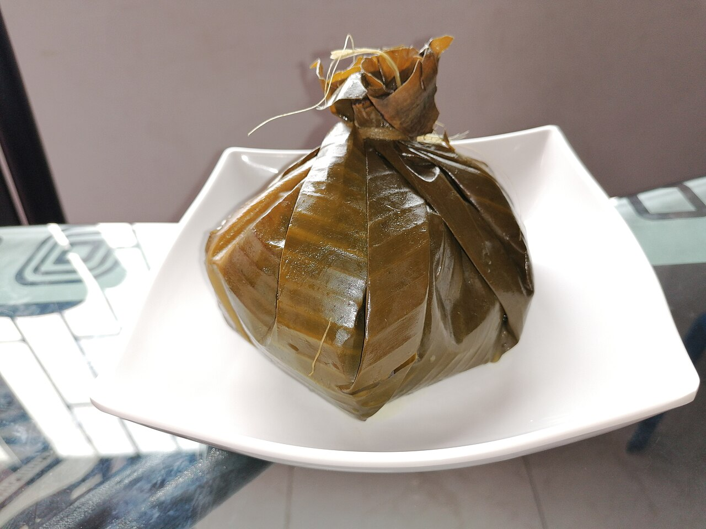

Tamal Tolimense

Description
In the Tolima region, the Tamales Tolimenses are a delicacy. These tamales are made of corn dough and feature peas, carrots, potatoes, rice, chicken, pork, and various spices. They are wrapped in plantain leaves and boiled for three to four hours.
Ingredients
- 2 pounds of pork ribs
- 12 pieces of chicken
- 1 pound pork belly
- 4 medium potatoes
- 2 large carrots
- 6 cooked eggs
- 1 cup peas
- 3 cups cooked rice
Steps
- Place all the marinade ingredients in the blender and blend until smooth. Reserve ½ cup of the marinade to prepare the masa.
- In a large plastic bowl place all the meat, add 1 ½ cups of the marinade. Mix well, cover and refrigerate overnight.
- To prepare the masa: Place the masarepa in a large bowl, add the water, salt, sazon Goya or color and reserved marinade. Mix well with a wooden spoon or your hands.
- Wash the leaves well with hot water and set aside.
- To assemble the tamales: Place 1 piece of the leaf on a work surface and place a second leaf on top, pointing in the opposite direction, like forming a cross.
- Spread ½ cup of masa and about ¼ cup of rice in the center of the banana leaves, at the point where they connect and form a cross. Place, 1 piece pork belly, 1 piece of chicken and 1 piece of rib on top of the masa and place about 1 tablespoon of peas, 1 or 2 slices of carrots and 2 slices of potatoes on top of the meat.
- Bring the corners of the banana leaves up to the middle of the filling, and tie it with butcheru2019s string right above the filling, so that there is a tuft of leaves above the string (see picture).
- Bring a large pot with salted water to a boil. Add the tamales and then reduce the heat to low. Cover and cook for 2 hours. Remove the tamales from the pot and let them sit for about 5 minutes before serving.
Home